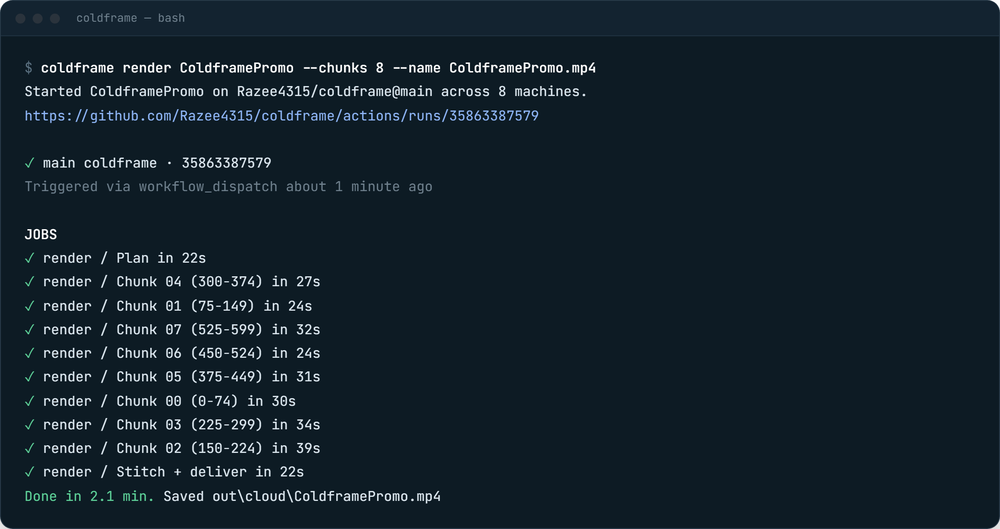

Render in the cloud.
Your laptop stays cold.
coldframe sends your Remotion render to free GitHub machines, splits it across up to 20 of them, checks every frame, and brings the MP4 back to you. Your computer stays free the whole time.
npx github:Razee4315/coldframe setupMade with Remotion, rendered by coldframe: 600 frames on 8 GitHub machines, every frame checked. See the run
One video in, one MP4 out. Many machines in between.
Normally one computer renders every frame, one after another. coldframe cuts the video into equal pieces and renders each piece on its own GitHub machine, all at the same time.
Split
Packs your project once, reads how long the video is, and cuts it into equal frame ranges.
Render in parallel
Every machine renders its range, with its exact slice of the audio.
Join, check, deliver
Joins the pieces without re-encoding, counts every frame, and hands you the MP4 (and saves it to Google Drive if you want).


Three steps. About five minutes, once.
You need a Remotion project on your computer and Node.js 18 or newer.
Install the GitHub CLI
coldframe uses it to talk to GitHub. Run the line for your system, then open a new terminal.
Run setup in your project folder
It walks you through everything and asks before it creates anything:
- signs you in to GitHub (you paste a code in your browser)
- puts your project on GitHub if it isn't there yet
- adds the render workflow, the Claude Code skills and the Colab connection
- optionally connects Google Drive
npx github:Razee4315/coldframe setupRender
Use the id of the composition you want (the id of your Remotion <Composition>). The MP4 lands in out/cloud/.
npx github:Razee4315/coldframe render MyVideoGoogle Drive and Colab. A few clicks each.
Neither needs a password or key copied anywhere. You sign in to Google in your browser, and that's it.
Google Drive
Every finished render is also copied to My Drive/coldframe/.
- Install rclone, the tool that uploads to Drive:
winget install Rclone.Rclone # Windows brew install rclone # macOS - Run this in your project folder:
npx github:Razee4315/coldframe drive - A Google page opens. Pick your account and click Allow. coldframe can only see files it creates itself, not the rest of your Drive.
Google Colab
A free cloud computer, sometimes with a T4 GPU. Useful for 3D (WebGL / three.js) scenes, which GitHub's machines render without a GPU.
- Install uv:
winget install astral-sh.uvorbrew install uv. - Open your project in Claude Code and approve the colab-mcp server (setup added it).
- Stay signed in to Google in your browser, then ask Claude: "render MyVideo on Colab". A Colab tab opens and connects by itself.
- For the GPU: in that tab, Runtime → Change runtime type → T4 GPU.
When the cloud wins, and when it doesn't.
| Measured | Laptop (4 cores / 8 threads) | coldframe on GitHub |
|---|---|---|
| The 20 s demo above600 frames, 1080p, 30 fps | 46 s | 1 min 53 s 8 machines, including setup |
| Your computer while it renders | Busy, fans on | Free, can even be off |
| 3D scenes (WebGL / three.js) | Uses your GPU | No GPU, drawn in software: much slower |
Each machine spends about 40 s getting ready, so short videos are still quicker at home. coldframe is for when you need your computer while a video renders, and for long videos made of text, UI, images and footage. For 3D-heavy videos, render the 3D shots once on a GPU (your laptop or Colab) and use them as clips.
Videos that don't look AI-made.
Setup adds a video-rules skill to your project, so Claude Code follows these whenever it makes a video. The demo above was made with them.
FAQ
Is it really free?
Yes. On public repos, GitHub machines are free with no limit. Private repos get 2,000 free machine-minutes a month, and each machine counts separately (8 machines for 3 minutes = 24 minutes). If you run out, GitHub stops the job. You're never charged unless you add a payment method.
Will the joins between pieces show?
No. Each frame is rendered on its own, the video pieces are joined without re-encoding, and each piece carries its audio as lossless PCM, so the soundtrack joins sample-exactly (tested bit-for-bit). If the final frame count is wrong, the run fails instead of giving you a broken file.
Does three.js / WebGL work?
Yes, and it looks the same as a GPU render, but GitHub's machines have no GPU, so 3D is drawn in software and is much slower. For 3D-heavy videos, try Colab's T4 GPU (gpu=True in the Colab helper, still experimental) or render the 3D shots once on your own GPU.
What does coldframe get access to?
On GitHub: only the repo you run it in. On Google Drive: only files coldframe creates itself (Google's drive.file access), stored as a secret in your repo. Temporary render pieces are deleted after a day.
Why not Remotion Lambda?
Lambda is faster and built for production, but needs an AWS account and costs money per render. coldframe is for free renders from a plain GitHub repo.
What about Remotion's license?
coldframe is MIT licensed. Remotion has its own license: free for individuals and companies of up to 3 people, larger companies need a company license.
Keep your laptop cold.
One command to set up. One command to render.
npx github:Razee4315/coldframe setup